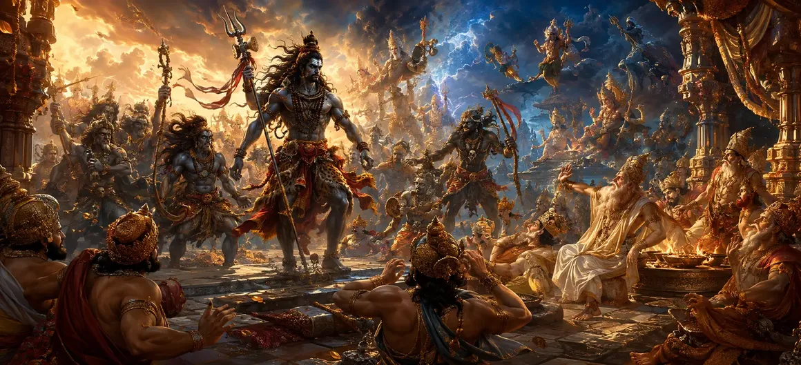

The Destruction of Daksha's Sacrifice — Part 2
The twenty-first chapter of the Vayaviya Samhita continues the intense and dramatic account of the dismantling of King Daksha's grand sacrificial arena.
Sage Vayu details the direct confrontation and chastisement of the celestial beings and sages who supported the unrighteous assembly.
This chapter underscores the inescapable reality of divine accountability for all beings.
Chapter 21 Highlights
Intense Combat
Portrays the fierce engagement between the Gana army and celestial defenders.
Humbling of Deities
Shows prominent gods facing physical chastisement for their complicity.
Systematic Dismantling
Captures the complete leveling of remaining altars, pavilions, and pillars.
Unstoppable Force
Demonstrates the absolute supremacy of Virabhadra's righteous wrath.
Cosmic Balance
Highlights the restoration of order through the purging of pride.
Prelude to Part 3
Sets the stage for the final encounters and the fate of Daksha in Chapter 22.
Core Topics in This Chapter
Continuation of the Fierce Battle
As the conflict escalated, the battlefield reverberated with the thunderous roars of the Ganas and the desperate cries of celestial protectors.
No amount of divine weaponry or protective spells could withstand the unstoppable force unleashed by Lord Shiva's wrath.
Chastisement of the Assembled Deities
Prominent deities who had lent their support to Daksha's exclusionary sacrifice were confronted and severely chastised by Virabhadra's commanders.
Their celestial prestige offered no immunity against the consequences of participating in unrighteousness.
Levelling of the Remaining Altars
The magnificent sacrificial altars, adorned with gold and jewels, were systematically smashed into dust by the formidable Ganas.
Not a single structural pillar was left standing, symbolizing the total collapse of the ego-driven enterprise.
Sages and Priests Brought to Sense
The learned sages and ritual priests, who had officiated the forbidden ceremony out of fear or compliance, found themselves utterly helpless.
Their profound Vedic knowledge could not shield them from the humbling experience of witnessing their ritual desecrated.
Overpowering Celestial Pride
Virabhadra directly addressed the assembly, exposing the folly of ignoring the Supreme Lord while attempting to perform sacred rites.
His words pierced through their pride, forcing every participant to recognize the gravity of their transgression.
The Complete Purging of the Grounds
As Part 2 draws to a close, the sacrificial arena is completely transformed from a site of arrogant celebration into a wasteland of shattered ambition.
The stage is cleared for the final confrontation with King Daksha himself.
Transition to Chapter 22
Having witnessed the widespread chastisement and dismantling in Chapter 21, Rishi Vayu introduces Chapter 22, 'The Destruction of Daksha's Sacrifice — Part 3'.
Chapter 22 brings the epic narrative to its climactic resolution, detailing the fate of Daksha and the ultimate restoration of cosmic order.
Key Teachings of Chapter 21
Universal Accountability
Even celestial beings face consequences when they support adharma.
Shattered Illusion
Status and titles cannot protect one from the reach of divine law.
Purity of Intent
Sacrifice devoid of genuine devotion to the Supreme is worthless.
Inevitable Correction
Arrogance is always met with a swift and humbling lesson.
Restoring Harmony
Purging corruption clears the path for true spiritual revival.
Epic Climax Setup
Builds intense anticipation for the final confrontation in Chapter 22.
Spiritual Reflection
The systematic humbling of deities and sages in this chapter reminds us that no position of authority excuses a disregard for supreme truth; true spiritual alignment requires continuous humility and reverence for all.
Living the Message of Chapter 21
Reflect on your responsibilities and ensure your actions align with righteousness rather than popular compliance.
Cultivate inner humility so that pride never blinds you to universal truth.
Respect the divine order in all aspects of your daily life.
Key Spiritual Concepts
The physical chastisement and humbling of participating deities.
The crushing defeat of the forces supporting the forbidden sacrifice.
The complete dismantling and purging of celestial and mortal pride.
The utter bewilderment and helplessness of the assembly members.
The restoration of righteousness through the removal of adharma.
The final phase of destruction detailed further in Chapter 22.
Chapter Summary
Vayaviya Samhita Chapter 21 presents The Destruction of Daksha's Sacrifice — Part 2. Detailing the ongoing combat, the chastisement of the assembled deities, and the leveling of the remaining altars, this chapter emphasizes the absolute necessity of divine humility. It sets the stage for Chapter 22, 'The Destruction of Daksha's Sacrifice — Part 3', where the ultimate resolution takes place.
Frequently Asked Questions
1. What is the primary focus of Vayaviya Samhita Chapter 21?
Chapter 21 focuses on the continuation of the battle, the chastisement of the participating deities, and the severe humbling of those supporting Daksha's arrogant sacrifice.
2. How are the deities and sages treated during the combat?
The deities who supported the unauthorized sacrifice face physical chastisement by Virabhadra and the Ganas, bringing them face to face with the consequences of ignoring Lord Shiva.
3. What happens to the remaining structures of the sacrificial arena?
Every remaining pillar, altar, and sacred pavilion is systematically torn down or scattered, leaving no trace of the arrogant ritual.
4. Why is this chapter designated as Part 2?
It builds directly upon the initial invasion detailed in Part 1, taking the narrative deeper into the individual encounters and cosmic accountability.
5. What ultimate lesson is drawn from this phase of destruction?
It demonstrates that status, power, or divine titles do not exempt anyone from the laws of cosmic righteousness and universal respect.
6. What is the next chapter for navigation after Chapter 21?
The next chapter for navigation is Chapter 22, titled 'The Destruction of Daksha's Sacrifice — Part 3'.
“When ego blinds the mighty, divine correction strips away all false prestige to restore the pure light of truth.”
Continue Through Vayaviya Samhita
Chapter 21 details The Destruction of Daksha's Sacrifice — Part 2. Continue to Chapter 22, The Destruction of Daksha's Sacrifice — Part 3.